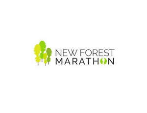

Trade Mark Journal No.2025/042 17 October 2025
UK00004276328 10 October 2025 (16,25,35,36,41)

- Class 16
- Printed matter; printed publications; event programs; educational and teaching materials; books; magazines; brochures; newsletters; pamphlets; leaflets; postcards; stationery; posters; labels; stickers; pens; pencils.
- Class 25
- T-shirts, jackets, hoodies; caps, hats; beenies, headgear.
- Class 35
- Event marketing; promotion of sports competitions and events; arranging promotion of charitable fundraising events; promotion of goods and services through sponsorship of sports events.
- Class 36
- Charitable fundraising services; charitable fundraising through the arranging and hosting of sport events; charitable collections; arranging of financial sponsorship and fund sponsorship of sports events; online fundraising services; charitable fundraising through the sale of entries to sports events and races; insurance; information, consultancy and advice relating to any of the aforesaid services.
- Class 41
- Sporting and cultural activities; sporting entertainment services; sporting activities; sporting events for charity fundraising; arranging, organising, hosting and management of sporting events, tournaments and competitions; arranging, organising, hosting and management of running races and running events; provision of education and training services; providing online electronic publications; publication of printed matter relating to an event, tournament or competition; online ticket and entry services for events, tournaments or competitions; publication of printed commemorative images, videos and memorabilia of an event, tournament or competition; electronic publication of commemorative images and videos of an event, tournament or competition; production of live and pre-recorded features for sports events, tournaments or competitions; production of radio broadcasts for sports events, tournaments or competitions; production of audio and video recordings; photography services.
Ora Events Limited
Representative: First Twenty Consulting Ltd